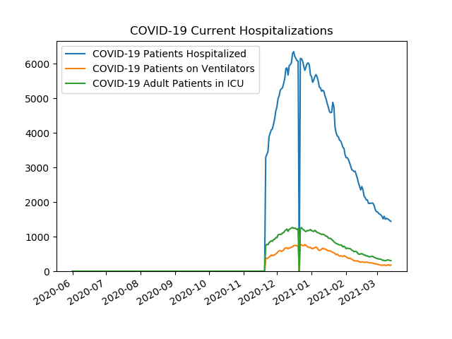
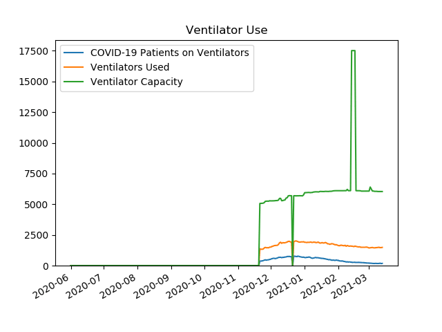
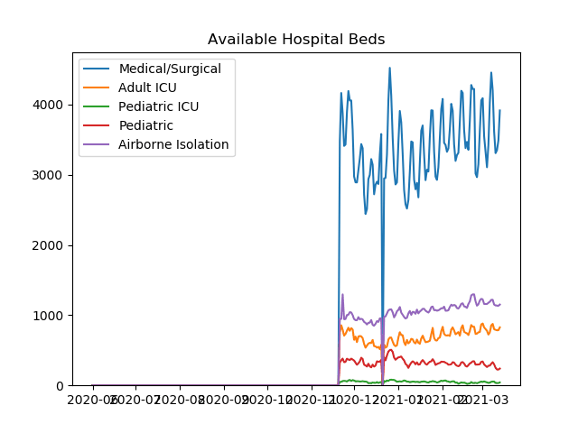
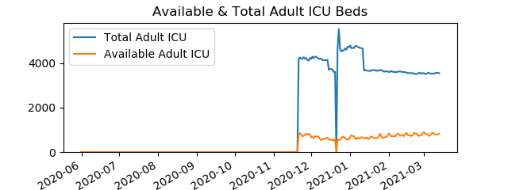
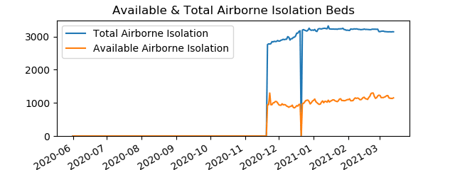
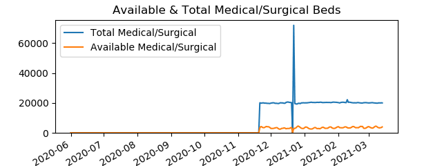
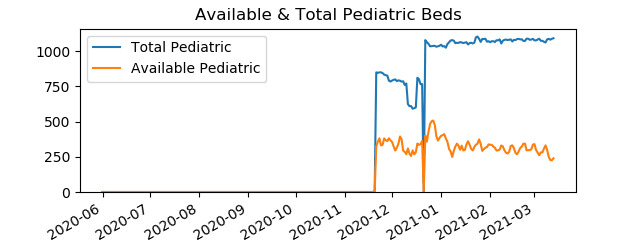
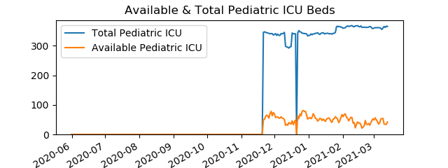

Active COVID-19 Hospitalizations in Pennsylvania
Data is from
PA Dept Of Health
COVID-19 Current Hospitalizations
Date
COVID-19 Patients Hospitalized
COVID-19 Patients on Ventilators
COVID-19 Adult Patients in ICU
20201121
3294
367
748
20201201
4744
524
967
20210101
5624
661
1172
20210201
3280
420
650
20210210
2789
293
569

Ventilator Use
Date
COVID-19 Patients on Ventilators
Ventilators Used
Ventilator Capacity
20201121
367
1366
5064
20201201
524
1512
5273
20210101
661
1902
5940
20210201
420
1629
6103
20210210
293
1598
6106

Available Hospital Beds
Date
Airborne Isolation
Pediatric
Pediatric ICU
Medical/Surgical
Adult ICU
20201121
946
325
49
3475
749
20201201
945
355
69
2975
649
20210101
1075
399
55
3460
680
20210201
1097
335
60
4080
834
20210210
1136
296
38
3198
728

Available & Total Adult ICU Beds
Date
Available Adult ICU Beds
Total Adult ICU Beds
20201121
749
4184
20201201
649
4187
20210101
680
4789
20210201
834
3595
20210210
728
3622

Available & Total Airborne Isolation Beds
Date
Available Airborne Isolation Beds
Total Airborne Isolation Beds
20201121
946
2758
20201201
945
2864
20210101
1075
3190
20210201
1097
3189
20210210
1136
3218

Available & Total Medical/Surgical Beds
Date
Available Medical/Surgical Beds
Total Medical/Surgical Beds
20201121
3475
20087
20201201
2975
19833
20210101
3460
20000
20210201
4080
20198
20210210
3198
20369

Available & Total Pediatric Beds
Date
Available Pediatric Beds
Total Pediatric Beds
20201121
325
849
20201201
355
791
20210101
399
1045
20210201
335
1063
20210210
296
1080

Available & Total Pediatric ICU Beds
Date
Available Pediatric ICU Beds
Total Pediatric ICU Beds
20201121
49
345
20201201
69
338
20210101
55
335
20210201
60
359
20210210
38
365
